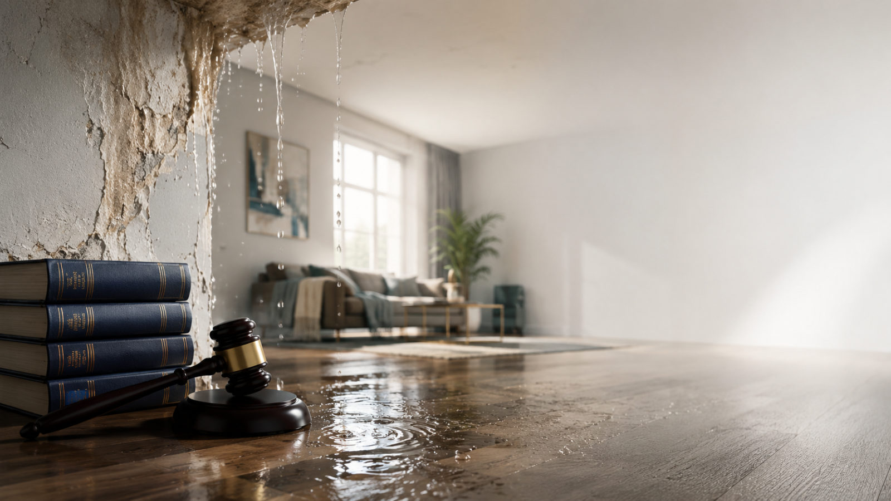
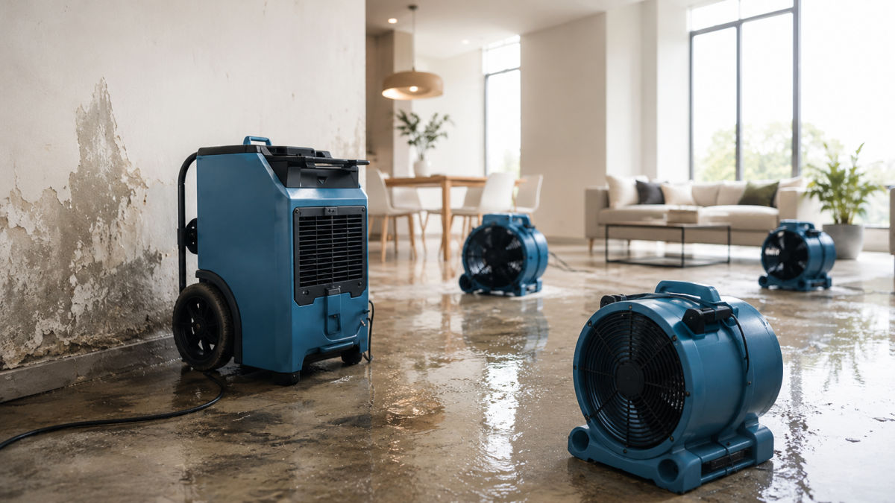
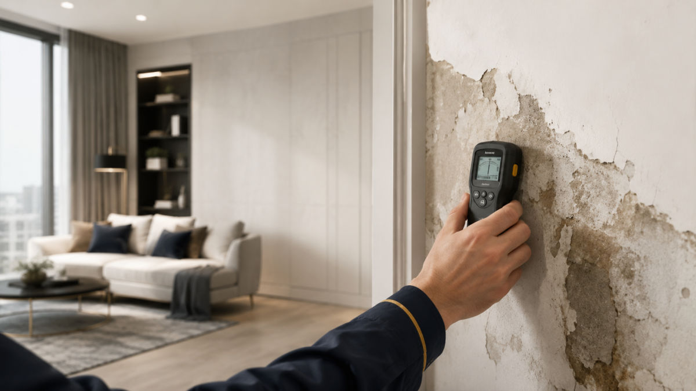
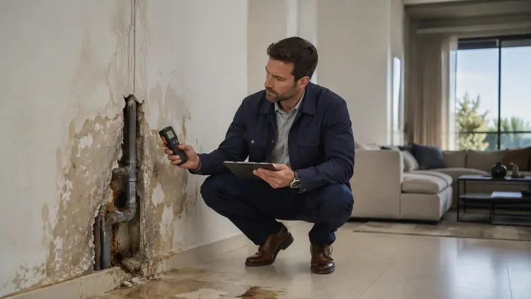

נזילה מהשכן, רטיבות מצנרת משותפת או דחייה של חברת הביטוח מחייבות פעולה מהירה ובחירת המסלול המשפטי הנכון. עו״ד ששי לב מייצג בתביעות נזקי מים, ביטוח ונזקי רכוש — מכתבי התראה, תביעות כספיות וצווי עשה לעצירת נזק פעיל.
בחרו את המצב שלכם — ונתאים לכם את הבדיקה ואת הצעדים הנכונים.
נזקי מים אינם נופלים לקטגוריה אחת. זיהוי המסלול הנכון מההתחלה חוסך זמן, כסף ונזק נמשך.
נזק מים מכוסה בפוליסת מבנה או תכולה, אך התביעה נדחתה, שולמה בחלקה או מתעכבת. תביעה כספית מול המבטחת מכוח חוק חוזה הביטוח, תום הלב וחובת ההנמקה.
הנזילה מקורה אצל שכן או גורם אחר. ניתן לתבוע אותו ישירות — בין אם יש לו ביטוח ובין אם לא — בעוולת רשלנות ומטרד, להשבת מלוא הנזק.
נזילה או חלחול מים משכן או מצנרת משותפת בבית משותף. ניתן לדרוש צו עשה — חיוב לתקן ולעצור את הנזק — בפני המפקח על המקרקעין.
ארבע שאלות קצרות, ותקבלו אינדיקציה ראשונית למסלול המתאים ולשכר הטרחה. ללא עלות וללא התחייבות.
להמחשה בלבד — מתיקי נזקי מים אמיתיים. אין באמור הבטחה או אינדיקציה לתוצאה; כל מקרה נבחן לגופו לפי נסיבותיו.
חברת הביטוח הציעה 27,000 ₪. לאחר ניהול התביעה נסגר התיק בכ-168,000 ₪.
הביטוח דחה כיסוי בטענה לנזקים קודמים. לאחר ניהול ההליך שולם מלוא הנזק — כ-124,000 ₪.
הביטוח שילם 47,500 ₪. לאחר מינוי מומחה מטעם בית המשפט וניהול הליך — כ-223,000 ₪.
לקוחה סבלה שנים מאיטום לקוי בגג השכנים. לאחר ניהול הליך ניתן פסק דין לצו עשה לאיטום הגג — והנזילות פסקו.
* הדוגמאות לעיל הן מתיקים אמיתיים שטופלו במשרד, והסכומים מעוגלים. אין בהן כדי להבטיח או להעיד על תוצאה דומה בתיק אחר — תוצאת כל תיק תלויה בנסיבותיו ונבחנת לגופה. אין באמור התחייבות לתוצאה כלשהי.
כשהמים עדיין זורמים, כל יום מגדיל את הנזק. הסדר הנכון: תחילה צו עשה לעצירת הנזק, ובמקביל או לאחריו תביעה כספית להשבת ההפסד. בשני המסלולים הצעד הראשון הוא מכתב התראה.

מי אחראי ומול מי לפעול
דרישה מנומקת בכתב
חיוב לתקן מיידית
השבת מלוא ההפסד
פנייה משפטית מנומקת אל האחראי או אל המבטחת, הדורשת תיקון מיידי או תשלום וקוצבת זמן לפעולה. 1,500 ₪ + מע״מ
אם אין מענה — תביעה לצו עשה אצל המפקח על המקרקעין, לחיוב האחראי לתקן ולעצור את הנזק הנמשך. 7,950 ₪ + מע״מ
שכר הטרחה נקבע לפי המסלול. כל הסכומים אינם כוללים מע״מ, אגרת בית משפט ושכר מומחה, וכפופים להסכם שכר טרחה פרטני.
פנייה משפטית מנומקת הדורשת תיקון או תשלום וקוצבת זמן. פעמים רבות פותרת את הסכסוך עוד לפני הגשת תביעה.
הגשת תביעה לצו עשה אצל המפקח על המקרקעין, לחיוב האחראי לתקן ולעצור את הנזק הנמשך.
דמי פתיחת תיק וניהול תביעה כספית מול המבטחת או הצד האחראי. בנוסף — שכר טרחה מותנה בתוצאה, בהתאם להיקף התיק.
* בתביעה הכספית: דמי פתיחת תיק 3,750 ₪ + מע״מ, ובנוסף שכר טרחה מותנה בתוצאה בהתאם להיקף התיק. מנגנון שכר הטרחה המלא ייקבע בהסכם שכר טרחה פרטני, לאחר בדיקת התיק. כל מקרה נבחן לגופו.
לא רק תיק — אדם אחד שמלווה אתכם מהרגע הראשון ועד התוצאה.
עו״ד ששי לב עומד בראש המשרד ועוסק בדיני ביטוח, נזיקין ונזקי רכוש — עם דגש על נזקי מים, נזילות צנרת ותביעות מול חברות ביטוח. המשרד מלווה ניזוקים ומזיקים כאחד, מהפנייה הראשונה ומכתב ההתראה ועד לפסק הדין או להסדר הפשרה.
הגישה במשרד מעשית: זיהוי המסלול המתאים, בניית תשתית ראייתית מסודרת (חוות דעת שמאי ומאתר נזילות), וניהול מו״מ ותביעה לפעולה למיצוי הזכויות. כל תיק מלווה אישית — אתם יודעים בכל שלב מה קורה ולמה.
נזק מים נראה כעניין טכני, אבל הוא קודם כל סוגיה משפטית: מי אחראי, מול מי תובעים, ובאיזה מסלול. עו״ד ששי לב עוסק בדיני ביטוח, נזיקין ונזקי רכוש, ומלווה ניזוקים ומזיקים מול חברות ביטוח, שכנים, ועדי בית, שמאים ובתי משפט. בנזק מים הזמן הוא גורם חשוב — ככל שהזמן עובר הנזק עלול לגדול והראיות עלולות להיחלש.
בלי ז׳רגון: העקרונות שקובעים אם, כמה וממי ניתן לקבל בנזקי מים וצנרת.

צו עשה הוא הוראה של בית המשפט (או של המפקח על המקרקעין בבית משותף) המחייבת את האחראי לבצע פעולה ממשית — בדרך כלל לתקן את הצנרת או לאטום את מקור הנזילה — בנוסף לפיצוי כספי או במקומו. מתאים במיוחד כשהנזק עדיין פעיל ופיצוי כספי לבדו לא יעצור אותו.
לפי סעיף 38 לפקודת הנזיקין, מים עשויים להיחשב ״דבר נמלט״. במקרים המתאימים — לאחר שמוכחים מקור המים והשליטה בהם — עשוי נטל הראיה לעבור אל הצד שממנו נמלטו המים, כך שעליו להראות שלא התרשל.
בנוסף, בבית משותף עשויה לחול על בעל דירה — מכוח התקנון המצוי שבחוק המקרקעין — חובה לתקן בדירתו פגם שעלול לפגוע בשכנו.
בהתאם למקור הנזילה, אפשר לתבוע — לעיתים במקביל — את אחד מאלה:
| את מי תובעים | על מה מתבססים | מי צריך להוכיח |
|---|---|---|
| השכן / המזיק | סעיף 38 + עוולת הרשלנות (פקודת הנזיקין) | במקרים המתאימים — הנתבע, שלא התרשל |
| חברת הביטוח | חוזה הפוליסה + חובת תום הלב וההנמקה | התובע — בכפוף לבדיקת ההחרגות בפוליסה |
| נציגות הבית המשותף | אחריות לצנרת/רכוש משותף + סעיף 38 | במקרים המתאימים — הנציגות |
המפתח בכל המסלולים: חוות דעת מומחה (שמאי או מאתר נזילות) שמאתרת את מקור הנזילה — היא שקובעת במידה רבה את חלוקת האחריות בין הצדדים.
בנזקי צנרת, חוות דעת מקצועית ומוקדמת היא הבסיס לכל תביעה. בלי מומחה מוסמך שיאתר את מקור הנזילה ויאמוד את הנזק — קשה מאוד לבסס תביעה מוצלחת.

לכל שלב בתיק מתאים מומחה אחר — מאיתור מקור הנזילה ועד אומדן הנזק. הפסיקה מדגישה שוב ושוב: היעדר חוות דעת מתאימה עלול להכשיל את התביעה, גם כשהנזק ברור לעין. לכן בונים את התשתית הראייתית מההתחלה.
| סוג המומחה | התפקיד העיקרי | מתי נדרש |
|---|---|---|
| מאתר נזילות | איתור מקור הנזילה (מד לחות, מצלמה תרמית) | תמיד — השלב הראשון |
| שמאי רכוש | אומדן עלות התיקונים ותיעוד הנזקים | תמיד — לצורך הפיצוי |
| מהנדס אינסטלציה | בדיקת תקינות הצנרת ואופן ההתקנה | במחלוקת על אופן ההתקנה |
| קונסטרוקטור | בדיקת פגיעה מבנית בתקרה ובקירות | כשנגרם נזק מבני |
| מומחה מטעם בית המשפט | הכרעה בין חוות דעת הצדדים | כשיש פער בין הערכות |
אנחנו עובדים עם שמאים, מאתרי נזילות ומהנדסים — ודואגים שחוות הדעת תיערך נכון ובזמן, לפני שהראיות נעלמות.
בדיקת התאמה ראשונית ללא עלות וללא התחייבות — נזהה את הבעיה, את הגורם האחראי ואת המסלול המתאים, ונראה לכם כיצד לפעול. נחזור אליכם עוד היום.